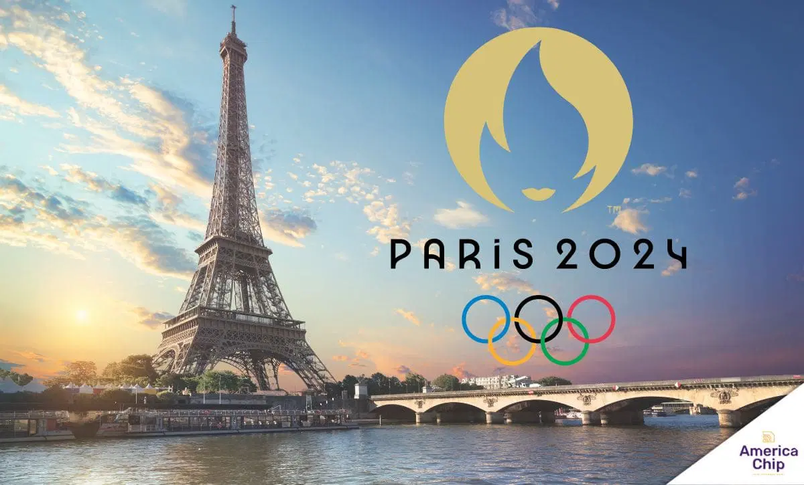

Os Jogos Olímpicos têm uma longa e rica história que remonta à Grécia Antiga, onde eram realizados em Olímpia, em homenagem a Zeus. Após séculos de interrupção, o evento foi revivido na era moderna por Pierre de Coubertin, em 1896, com os primeiros Jogos Olímpicos da era moderna realizados em Atenas. Desde então, os Jogos se tornaram um evento global, celebrado a cada quatro anos, reunindo atletas de todo o mundo para competir em diversas modalidades esportivas.
|  |
Sede dos Jogos Olímpicos de 2024 – Paris, França |
Rebeca Andrade (Ginástica Artística)
Rebeca Andrade é uma das principais atletas da ginástica artística mundial e destaque do Brasil nas Olimpíadas de 2024. Medalhista de ouro e prata em Tóquio 2020, ela é conhecida por sua técnica refinada e apresentações elegantes, especialmente no salto e no solo. Após superar várias lesões ao longo da carreira, Rebeca se tornou uma inspiração pela sua resiliência e talento, sendo uma das grandes favoritas em Paris.
Beatriz "Bia" Souza (Judô)
Beatriz Souza é uma das principais judocas do Brasil e destaque na categoria de peso-pesado (+78kg). Reconhecida por sua força e técnica, Bia tem conquistado resultados expressivos em competições internacionais, incluindo medalhas em campeonatos mundiais e pan-americanos. Nas Olimpíadas de 2024, ela conquista sua primeira medalha de ouro, levando o nome do Brasil com orgulho e consolidando-se como uma das grandes atletas do judô mundial.
Rayssa Leal (Skateboarding)
Rayssa Leal, também conhecida como "Fadinha", é um fenômeno do skate brasileiro e mundial. Após conquistar a medalha de prata nas Olimpíadas de Tóquio 2020, Rayssa chega às Olimpíadas de 2024 como uma das principais favoritas no skate street. Conhecida por seu carisma e talento desde jovem, ela é referência no esporte, impressionando o mundo com suas manobras técnicas e consistência. Aos 16 anos, Rayssa já é uma das atletas mais admiradas do Brasil e conquista mais uma medalha nesse ano de 2024 sendo uma de bronze.